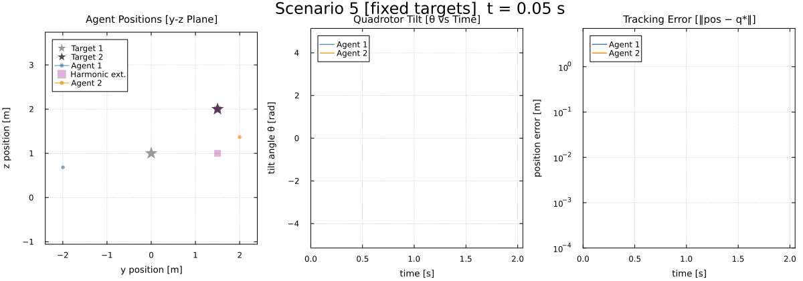
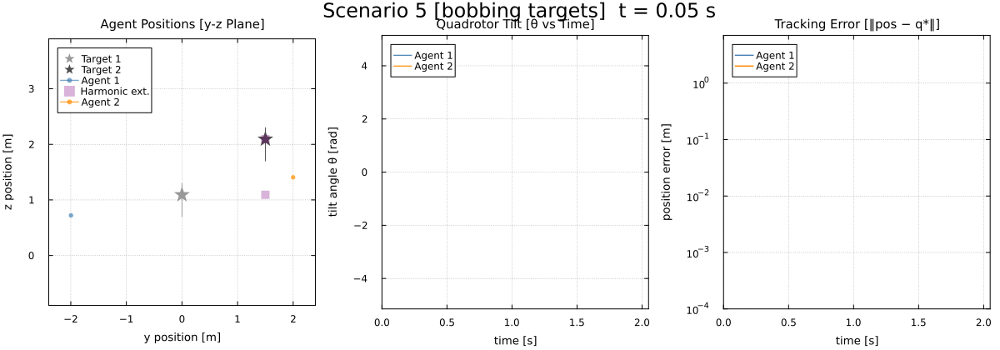

Layered Control Architecture for Multi-Quadrotor Tracking (Scenario 5)
This example demonstrates a layered control architecture designed for multi-agent target tracking where high-level spatial coordination is handled by a static cellular sheaf and low-level tracking is managed by independent LQR controllers running on distributed Julia worker processes.
Architecture Overview
The control pipeline is structured as follows:
- 2D Coordination Sheaf: Operates on spatial positions ($y, z$), resolving the conflict between target tracking and agent consensus by computing a harmonic extension $\mathbf{q}^*$.
- Distributed Tree Solve: Solves for $\mathbf{q}^*$ across parallel worker processes using tree-parallel message passing on the clique tree of the restricted Laplacian.
- Local Stalk Embedding & Tikhonov Filter: Each worker embeds its 2D spatial reference into its full 6D state space ($[y^*, z^*, 0, 0, 0, 0]^\top$) and smooths it using a Tikhonov reference filter.
- LQR Control: Drives each agent to the filtered reference on its dedicated worker process using an optimal state-feedback gain computed via the Discrete Algebraic Riccati Equation (DARE).
This separation of concerns ensures that the coordination Laplacian $H$ remains strictly positive-definite (full rank) and allows high-level spatial coordination to run efficiently across worker processes.
using CellularSheaves
using CellularSheaves.ControlSheaves.AgentControllers
using CellularSheaves.ControlSheaves.DistributedLayeredControl
using LinearAlgebra
using Plots
using Printf
using DistributedA single house style for every figure below — matches the escort.jl style
default(framestyle = :box, grid = true, gridalpha = 0.18, gridstyle = :dot,
titlefontsize = 10, guidefontsize = 9, legendfontsize = 8, tickfontsize = 8,
markerstrokewidth = 0, size = (1200, 380))Setup Dynamics & Constants
h = 0.05
T_end = 2.0
steps = Int(T_end / h) + 141We use the PlanarQuadrotorDynamics built into AgentControllers.jl
dyn = PlanarQuadrotorDynamics()
Ac, Bc = AgentControllers.continuous_matrices(dyn)
nx = size(Ac, 1)
nu = size(Bc, 2)2Compute Optimal LQR Gain (Discrete-time)
Q_diag = zeros(nx)
Q_diag[1:2] .= 10000.0
Q_diag[3] = 50.0
Q_diag[4] = 500.0
Q_diag[5:6] .= 10.0
Q_lqr = Matrix{Float64}(Diagonal(Q_diag))
R_lqr = Matrix{Float64}(I, nu, nu) * 0.0001
ctrl = LQRController(dyn, h, Q_lqr, R_lqr)CellularSheaves.ControlSheaves.AgentControllers.LQRController([-17.144524927497052 88.26817645626143 12.129118116954173 -7.555914057276635 7.205925284309048 1.0732144293294874; 17.14452492749708 88.26817645626144 -12.129118116954261 7.555914057276697 7.205925284309048 -1.0732144293294947])2D Coordination Sheaf Construction
Scenario 5 Configuration:
- Agent 1 tracks Target 1 in z
- Agent 2 tracks Target 2 in yz
- Agents agree in y (Consensus)
We set D = 2 for spatial positions [y, z].
D = 2
NA = 2
NT = 2
TotalV = NA + NT
sheaf = EuclideanSheaf{Float64}(fill(D, TotalV))A network sheaf with 4 vertex stalks and 0 edge stalks.
Coordinate projection matrices
R_y = [1.0 0.0]
R_z = [0.0 1.0]
R_yz = Matrix{Float64}(I, 2, 2)2×2 Matrix{Float64}:
1.0 0.0
0.0 1.0Setup coordination edges
add_sheaf_edge!(sheaf, 1, 2, R_y, R_y)
add_sheaf_edge!(sheaf, 1, 3, R_z, R_z)
add_sheaf_edge!(sheaf, 2, 4, R_yz, R_yz)3Simulation Framework
Ensure we have enough worker processes
workers_pids = workers()
if length(workers_pids) < NA
addprocs(NA - length(workers_pids))
workers_pids = workers()
@eval @everywhere using CellularSheaves
@eval @everywhere using CellularSheaves.ControlSheaves.AgentControllers
@eval @everywhere using CellularSheaves.ControlSheaves.DistributedLayeredControl
end
function run_scenario(target_type=:bobbing, mode=:distributed)
local t1_pos, t2_pos
if target_type == :bobbing
omega = 2π * 2 / (40 * h)
t1_pos = t -> [0.0, 1.0 + 0.3sin(omega*t)]
t2_pos = t -> [1.5, 2.0 + 0.3sin(omega*t)]
else
t1_pos = t -> [0.0, 1.0]
t2_pos = t -> [1.5, 2.0]
end
target_trajectory_func = (v, t) -> v == 3 ? t1_pos(t) : t2_pos(t)
init_states = [[-2.0, 0.5, 0.0, 0.0, 0.0, 0.0],
[2.0, 1.0, 0.0, 0.0, 0.0, 0.0]]
agent_configs = [ (init_states[i], dyn, ctrl.K) for i in 1:NA ] # Initialize agent configs for the workers
init_distributed_agents!(workers_pids, agent_configs, h, 0.02) # Initialize workers
prob = LayeredControlProblem(
sheaf=sheaf,
target_nodes=collect((NA+1):(NA+NT)),
target_trajectory_func=target_trajectory_func,
agent_configs=agent_configs,
dt=h,
steps=steps,
pos_dim=D # pass both y and z to the physical controller (no homogeneous coordinate)
)
result = run_layered_simulation(prob, workers_pids; mode=mode, nx=nx)
return result
endrun_scenario (generic function with 3 methods)Execution and Visualization
Run distributed simulation scenarios
res_fixed = run_scenario(:fixed, :distributed)
res_bob = run_scenario(:bobbing, :distributed)LayeredSimulationResult(LayeredControlProblem(A network sheaf with 4 vertex stalks and 3 edge stalks.
, [3, 4], Main.var"##1379".var"#run_scenario##8#run_scenario##9"(Core.Box(Main.var"##1379".var"#run_scenario##2#run_scenario##3"{Float64}(6.283185307179586)), Core.Box(Main.var"##1379".var"#run_scenario##0#run_scenario##1"{Float64}(6.283185307179586))), nothing, nothing, Tuple{Vector{Float64}, PlanarQuadrotorDynamics, Matrix{Float64}}[([-2.0, 0.5, 0.0, 0.0, 0.0, 0.0], PlanarQuadrotorDynamics(9.81, 0.5, 0.01, 0.25), [-17.144524927497052 88.26817645626143 12.129118116954173 -7.555914057276635 7.205925284309048 1.0732144293294874; 17.14452492749708 88.26817645626144 -12.129118116954261 7.555914057276697 7.205925284309048 -1.0732144293294947]), ([2.0, 1.0, 0.0, 0.0, 0.0, 0.0], PlanarQuadrotorDynamics(9.81, 0.5, 0.01, 0.25), [-17.144524927497052 88.26817645626143 12.129118116954173 -7.555914057276635 7.205925284309048 1.0732144293294874; 17.14452492749708 88.26817645626144 -12.129118116954261 7.555914057276697 7.205925284309048 -1.0732144293294947])], 0.05, 41, 0.0, 2), [-1.9963024171765862 1.9993176924708422; -1.9472236051570875 1.990407868490155; -1.8016303061255279 1.9654946846389558; -1.5532977012565847 1.9255373511985092; -1.225403134248642 1.8751619955149559; -0.8524574067022549 1.819834940733259; -0.46873341112944555 1.7644684687947072; -0.1020918810553013 1.7127762697506381; 0.22834886921535716 1.6671122753210175; 0.5121028216517918 1.6285964323008972; 0.745882078920014 1.597380108960741; 0.931642468559827 1.5729499149110866; 1.0746286336989792 1.554408192202188; 1.1817082303207083 1.5406989990587387; 1.2601161492575632 1.5307698378473136; 1.3166183583498547 1.5236727612779253; 1.3570410766530616 1.5186155176789171; 1.3860825534929684 1.514975879846205; 1.4073201684519385 1.5122918809608257; 1.42333512500188 1.5102386756057107; 1.4358932400000075 1.5086001162230385; 1.4461381150078776 1.507240515020394; 1.45476920175831 1.5060798042998327; 1.462190390167551 1.5050735670341913; 1.468624294649054 1.5041982007631458; 1.4741936181401614 1.503440738523179; 1.4789744160041596 1.5027924808938384; 1.483027471099466 1.5022454863121788; 1.486414009153775 1.5017910258495373; 1.4892012059310746 1.5014192558809727; 1.4914618017236578 1.5011195410451545; 1.4932709434998128 1.5008810339156675; 1.494702300427491 1.500693266454803; 1.4958246319422728 1.5005466232075342; 1.4966993518947158 1.5004326469425338; 1.4973792103901975 1.500344178327274; 1.4979079688472414 1.5002753585956434; 1.498320828860151 1.5002215347431154; 1.4986453489927465 1.5001791065931913; 1.4989026097888678 1.5001453489561718; 1.4991084388267544 1.5001182335645453;;; 0.7219990545364332 1.406442029962355; 1.0402935928777282 1.9641005432907739; 1.1805175984470277 2.168398233091473; 1.249534360104702 2.24785838626634; 1.2851482741511988 2.284931597634254; 1.2915808735314298 2.2915539010888213; 1.269305536954333 2.269302256066413; 1.2206478973965853 2.2206475041886145; 1.1503891633777632 2.1503891167129314; 1.0654089848572945 2.0654089793558605; 0.9740260828605916 1.9740260822149558; 0.8851856845586806 1.8851856844831487; 0.80758411090714 1.8075841108983233; 0.7488175450614112 1.7488175450603838; 0.7146384679892608 1.7146384679891413; 0.7083925659002231 1.7083925659002095; 0.7306912312092412 1.7306912312092397; 0.7793517151920137 1.7793517151920137; 0.849610790638789 1.849610790638789; 0.9345910097210745 1.9345910097210746; 1.025973916503094 2.025973916503094; 1.114814315366873 2.114814315366873; 1.1924158890841687 2.1924158890841694; 1.2511824549375754 2.2511824549375756; 1.2853615320106209 2.285361532010621; 1.2916074340997628 2.2916074340997623; 1.269308768790757 2.2693087687907565; 1.2206482848079858 2.2206482848079854; 1.1503892093612105 2.1503892093612107; 1.065408990278925 2.065408990278925; 0.9740260834969058 1.974026083496906; 0.8851856846331269 1.885185684633127; 0.8075841109158312 1.8075841109158313; 0.7488175450624245 1.7488175450624246; 0.7146384679893789 1.714638467989379; 0.708392565900237 1.708392565900237; 0.7306912312092428 1.7306912312092428; 0.779351715192014 1.779351715192014; 0.8496107906387893 1.8496107906387893; 0.9345910097210747 1.9345910097210746; 1.0259739165030943 2.0259739165030943;;; -1.80921483714432 0.3338507787928131; -4.112734415632086 0.6871883351444114; -4.287654835066029 0.6246560204721934; -3.2807139737117743 0.4273032469214098; -1.8346058628007225 0.1998147485310726; -0.41660870149549023 -0.002601020602292531; 0.7269225895979441 -0.1545178602548091; 1.505775710061682 -0.2500297441808424; 1.928240091307337 -0.29476493742209725; 2.0555165067603616 -0.29988732049750777; 1.9690450763000098 -0.2779922820500279; 1.7495031294611965 -0.24062009288698824; 1.465207788432842 -0.19701600779833084; 1.1673821751634332 -0.1537602892885852; 0.8899259020731909 -0.11493800795130414; 0.6517489421173221 -0.08258911965683044; 0.46022542982252 -0.05725420606394802; 0.31479992212842783 -0.038498552447992294; 0.21017871571234836 -0.025351191698495083; 0.13884211171016078 -0.01663468298997784; 0.09282110996966642 -0.011186857884413159; 0.06480733428474349 -0.007990037262020066; 0.04872671290173102 -0.006229213328128182; 0.039924725048574174 -0.005301171313491097; 0.03510074131613307 -0.00479381095398887; 0.03210443201413754 -0.00445076493420825; 0.029677875354424597 -0.004131988328467233; 0.027198903098056216 -0.003777020371231091; 0.024457639718892893 -0.003374441117833828; 0.021480370420795248 -0.002938749038545942; 0.018402746454463118 -0.002494402562392688; 0.015387096620136043 -0.0020659501477058423; 0.012575142867960442 -0.0016728451335750354; 0.010066569695536095 -0.001327537890573902; 0.007914664684857558 -0.001035620495760123; 0.006131838849880595 -0.0007970643644476985; 0.004699687336367876 -0.0006078685224699618; 0.0035800066288754363 -0.0004616836107598384; 0.00272465264471527 -0.0003511743197944472; 0.0020832340061409096 -0.00026902598876252855; 0.001608393586196339 -0.00020859411938512563;;; 0.2958066258730963 -0.05458460233262496; 1.8556585804482317 -0.33069370212661114; 3.982373125102873 -0.6607216351968987; 5.8686136542391365 -0.9214381131831875; 7.128949688011588 -1.0749789294155345; 7.672958145907196 -1.1215557727256844; 7.582517993958292 -1.0806839031748041; 7.019471966409569 -0.9791959620769964; 6.163621581249938 -0.8437067130603589; 5.176131669244165 -0.6965082529280346; 4.18210766092486 -0.5539346000712965; 3.2662554788217335 -0.42632833837895134; 2.476432270873416 -0.3189052039329995; 1.8310988378805277 -0.23299867679313668; 1.327899969918794 -0.16734149316319943; 0.9516593602492572 -0.11918609123040831; 0.6809064190091165 -0.08517478191613857; 0.4926411898411489 -0.061944006075447776; 0.3654161921421737 -0.046490746080992164; 0.2810138372326638 -0.036350042710523875; 0.2250729795847191 -0.029637692298741157; 0.1870121468923351 -0.025007695892916012; 0.1595459139230234 -0.021564680286129526; 0.13802118495360557 -0.01876067777422411; 0.11972935497663509 -0.01629544977698021; 0.10328853295310118 -0.014031083833816542; 0.08814175261375296 -0.01192528132732644; 0.07418310718046381 -0.009983520569559638; 0.06150251327313677 -0.008227808790071081; 0.05022874958397564 -0.006678607779997769; 0.040446677878592976 -0.005346310977144999; 0.03216552254156449 -0.004229000187240784; 0.025318631784807744 -0.0033138345822546563; 0.01977970466330596 -0.002580124175623973; 0.01538501166904139 -0.0020027906714230256; 0.011955074162233488 -0.0015554559027008202; 0.009312342505749123 -0.001212800122593612; 0.007293591908472285 -0.0009521045950590332; 0.005757138583557492 -0.000754055536446447; 0.004585729235003324 -0.0006029655703915579; 0.003686250484787288 -0.000486590399989893;;; 8.879962181457328 16.257681198494208; 3.851819352194469 6.04865933464254; 1.7571408705775133 2.123248257385436; 1.0035295957294523 1.055157869609244; 0.42102696613042667 0.42777058510730004; -0.16372299092118792 -0.16287844692459896; -0.7272904721626867 -0.727187353971721; -1.2190151101472217 -1.2190027211402341; -1.5913342506056614 -1.5913327778870985; -1.8078728902130843 -1.8078727163957402; -1.8474431896550338 -1.8474431692404523; -1.7061727424214017 -1.7061727400318343; -1.3978902036402259 -1.3978902033611837; -0.9527724301889265 -0.9527724301563899; -0.41439065269709163 -0.4143906526933041; 0.16455456913558586 0.1645545691360294; 0.7273920432251353 0.7273920432251817; 1.2190273160857683 1.219027316085774; 1.5913357017852419 1.5913357017852432; 1.8078730615061782 1.8078730615061769; 1.8474432097746052 1.8474432097745972; 1.706172744776555 1.706172744776571; 1.3978902039152747 1.3978902039152685; 0.9527724302209937 0.9527724302209776; 0.41439065270082587 0.41439065270082553; -0.16455456913514976 -0.16455456913515298; -0.7273920432250799 -0.7273920432250741; -1.219027316085764 -1.2190273160857623; -1.5913357017852476 -1.5913357017852365; -1.8078730615061709 -1.8078730615061758; -1.8474432097745979 -1.8474432097746014; -1.7061727447765591 -1.7061727447765573; -1.3978902039152679 -1.3978902039152743; -0.9527724302209974 -0.9527724302209943; -0.41439065270082465 -0.414390652700826; 0.16455456913515065 0.16455456913515332; 0.7273920432250811 0.7273920432250819; 1.2190273160857652 1.219027316085763; 1.5913357017852467 1.5913357017852516; 1.8078730615061713 1.8078730615061651; 1.847443209774613 1.8474432097746099;;; -72.3685934857728 13.354031151712526; -19.77218965373784 0.7794711023514083; 12.77537287638009 -3.280763689240123; 27.50226157779008 -4.613347252791222; 30.342062858652 -4.486192682822267; 26.377823593557295 -3.610438082512338; 19.363428050180083 -2.4662355035883254; 11.79069676836944 -1.3542398534530078; 5.107878481456749 -0.4351678761971872; -0.01682186333576663 0.23027255318076634; -3.4420353550783 0.6455289847184291; -5.339642518474233 0.8493585818031577; -6.0321711226599435 0.8948048217431386; -5.880853408116415 0.8354239186466863; -5.217397515493278 0.7174673348445567; -4.309680882741469 0.5764881969343912; -3.3512596090506177 0.4369083467809053; -2.46576069871307 0.31331779785732394; -1.7190875579301088 0.21257663212256458; -1.1343766021573949 0.1360837162181251; -0.7064634674623802 0.08182928800446222; -0.414087559934537 0.04604353689126148; -0.22913729538596164 0.024389420464413863; -0.12294221874031244 0.012732260121069622; -0.07001713055733175 0.007562154259019543; -0.04983524152248933 0.006159686532205361; -0.047227024866028505 0.006591377697435369; -0.05193186538870673 0.007607340592010209; -0.05771866977782611 0.00849582954388034; -0.06137210214607969 0.0089318536276351; -0.06173285650720555 0.008842005418495062; -0.05889313686587743 0.008296091168978784; -0.05358501322114661 0.0074281093962535495; -0.04675791367582743 0.006384180323791792; -0.03931828675131404 0.005292515468759366; -0.03199474664776452 0.004249729783737725; -0.02529131389274413 0.003318103895371797; -0.019495914406953356 0.0025292925730331407; -0.014718244959453279 0.0018910790655824773; -0.010938500583521187 0.0013948541756942136; -0.00805511621426163 0.0010224205994018958], [1.5 1.5; 1.5 1.5; 1.5 1.5; 1.5 1.5; 1.5 1.5; 1.5 1.5; 1.5 1.5; 1.5 1.5; 1.5 1.5; 1.5 1.5; 1.5 1.5; 1.5 1.5; 1.5 1.5; 1.5 1.5; 1.5 1.5; 1.5 1.5; 1.5 1.5; 1.5 1.5; 1.5 1.5; 1.5 1.5; 1.5 1.5; 1.5 1.5; 1.5 1.5; 1.5 1.5; 1.5 1.5; 1.5 1.5; 1.5 1.5; 1.5 1.5; 1.5 1.5; 1.5 1.5; 1.5 1.5; 1.5 1.5; 1.5 1.5; 1.5 1.5; 1.5 1.5; 1.5 1.5; 1.5 1.5; 1.5 1.5; 1.5 1.5; 1.5 1.5; 1.5 1.5;;; 1.0927050983124842 2.0927050983124844; 1.1763355756877418 2.176335575687742; 1.2427050983124843 2.2427050983124843; 1.285316954888546 2.285316954888546; 1.3 2.3; 1.285316954888546 2.285316954888546; 1.2427050983124843 2.2427050983124843; 1.176335575687742 2.176335575687742; 1.0927050983124842 2.0927050983124844; 1.0 2.0; 0.9072949016875157 1.9072949016875156; 0.823664424312258 1.823664424312258; 0.7572949016875158 1.757294901687516; 0.714683045111454 1.714683045111454; 0.7 1.7; 0.7146830451114539 1.7146830451114539; 0.7572949016875159 1.757294901687516; 0.823664424312258 1.823664424312258; 0.9072949016875157 1.9072949016875158; 0.9999999999999999 2.0; 1.0927050983124842 2.092705098312484; 1.176335575687742 2.1763355756877423; 1.2427050983124843 2.2427050983124843; 1.2853169548885461 2.285316954888546; 1.3 2.3; 1.2853169548885461 2.285316954888546; 1.2427050983124843 2.2427050983124843; 1.176335575687742 2.176335575687742; 1.0927050983124837 2.092705098312484; 1.0 2.0; 0.9072949016875159 1.9072949016875158; 0.8236644243122582 1.8236644243122582; 0.7572949016875159 1.757294901687516; 0.7146830451114539 1.7146830451114539; 0.7 1.7; 0.7146830451114539 1.7146830451114539; 0.7572949016875157 1.7572949016875157; 0.823664424312258 1.823664424312258; 0.9072949016875161 1.9072949016875163; 0.9999999999999999 1.9999999999999998; 1.0927050983124846 2.0927050983124844])Compare distributed against centralized simulation to verify precision
res_fixed_c = run_scenario(:fixed, :centralised)
divergence = maximum(abs.(res_fixed.sim_data .- res_fixed_c.sim_data))
@printf("Max divergence between centralized and distributed simulation: %.3e\n", divergence)Max divergence between centralized and distributed simulation: 2.842e-14
Animated Multi-panel Visualization
We animate each scenario so the bobbing motion is clearly visible. For each frame k the three panels show:
- y-z position plane with agent trails, target positions, and harmonic extensions
- Tilt angle θ for both agents vs time (up to current frame)
- Per-agent tracking error ||xi[1:2] - q*i|| vs time
The visual style matches the escort example: steelblue agents, purple harmonic extension squares (alpha 0.3), grey star targets.
animate_scenario5(res_fixed;
frame_step = 2,
filename = "scenario5_fixed.gif",
fps = 15,
label_suffix = "fixed targets")
nothing # hide
animate_scenario5(res_bob;
frame_step = 2,
filename = "scenario5_bobbing.gif",
fps = 15,
label_suffix = "bobbing targets")
nothing # hide[ Info: Saved animation to /home/runner/work/CellularSheaves.jl/CellularSheaves.jl/docs/src/generated/layered/scenario5_fixed.gif
[ Info: Saved animation to /home/runner/work/CellularSheaves.jl/CellularSheaves.jl/docs/src/generated/layered/scenario5_bobbing.gif

